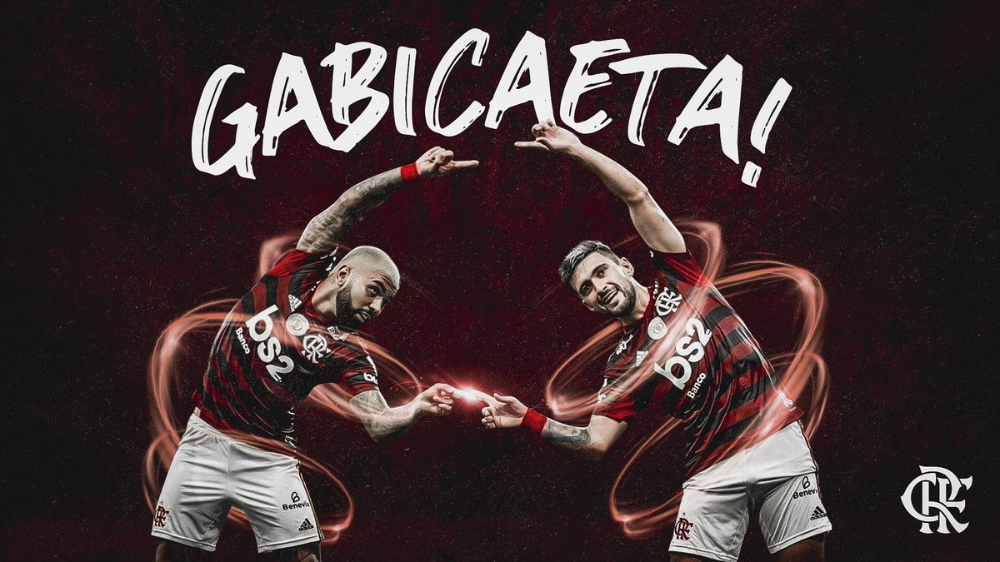

Post #1
Com grande atuação e dois gols de Everton Ribeiro, o Flamengo bateu o Talleres por 3 a 1 na segunda rodada da Libertadores, na noite de ontem (12), no Maracanã. A vitória manteve o Rubro-Negro com 100% de aproveitamento e na liderança do grupo H. Gabigol completou a conta em pênalti sofrido por Arrascaeta. Apesar de terem sido decisivos mais uma vez, a dupla voltou a errar muito e teve uma noite distante de sua melhor versão.